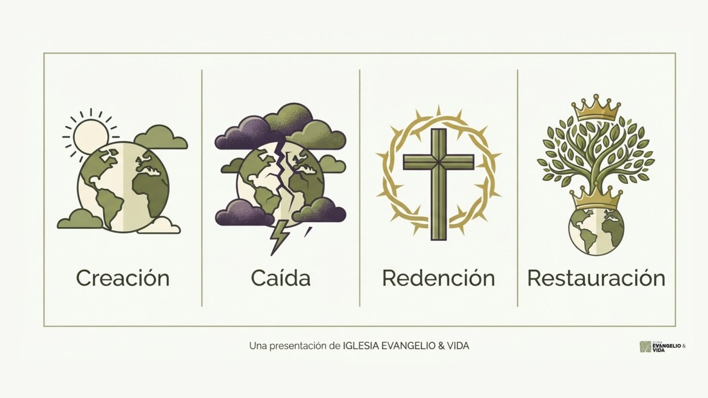

El Choque de Historias
La pequeña historia personal
Todos nos levantamos cada mañana siendo los directores, guionistas y protagonistas de nuestra propia película. Vemos el mundo a través de una lente muy pequeña: nuestra carrera, nuestros traumas del pasado, nuestras metas financieras y nuestra búsqueda de felicidad. Vivimos nuestra «pequeña historia personal».
El problema de vivir en esta micro-narrativa es que, cuando las cosas salen mal (una enfermedad, una ruptura, una crisis económica o la muerte de un ser querido), nuestra película se desmorona. Nos sentimos perdidos porque nuestra pequeña historia es demasiado frágil para sostener el peso de nuestra existencia. En ocasiones intentamos usar la religión o la fe como un «personaje secundario» que solo sirve para ayudarnos a cumplir nuestros propios objetivos.
La Gran Historia de Dios
Todos buscamos desesperadamente responder a las preguntas: ¿Quién soy?, ¿De dónde vengo? y ¿Hacia dónde voy?. Pero esta perspectiva solo responde conectando nuestra pequeña historia con la Gran Historia de Dios:
- El pasado: Vienes de un Dios que te creó con diseño y propósito (Creación).
- El presente: Reconoces tu necesidad de ser rescatado y transformado (Redención).
- El futuro: Tienes la esperanza viva de un mundo restaurado (Consumación).
Invita a la participación activa: No se trata de una historia de ficción para ser leída pasivamente. Al presentar a Dios como el protagonista que está redimiendo al mundo, se invita a las personas a formar parte del elenco. La fe se convierte en una respuesta de lealtad al Rey, donde el creyente se une a la misión de Dios para extender su amor, justicia y reconciliación en el mundo actual.

Punto de Partida
Acto 1: Creación (Dios y la Humanidad)
El evangelio es una historia maravillosamente real que comenzó con Dios, el único Señor de todo que existe en tres personas: Padre, Hijo y Espíritu Santo. Dios es infinitamente poderoso, glorioso, bueno y amoroso, y creó el universo entero y todo lo que hay en él para mostrar y compartir esa gloria. La base de esta historia se encuentra en los primeros capítulos de Génesis, donde se establecen los cimientos de nuestra identidad, nuestro propósito y nuestra conexión con Dios.
A diferencia del resto de la creación, Dios formó al hombre y a la mujer "a Su imagen" (Génesis 1:27). Esto significa que fuimos formados para ser Sus representantes y reflejar Su carácter en el mundo. Cuando Dios declaró en Génesis 1:31 que todo lo que había hecho era "bueno en gran manera", no solo se refería a que la creación carecía de maldad, sino a que existía en un estado de perfección absoluta, armonía y plenitud (un concepto que los hebreos llamaban Shalom).
Ese estado original definía cómo debían ser satisfechas nuestras necesidades más profundas a través de tres pilares:
- Comunión inquebrantable con Dios: No existía la barrera del pecado, la culpa ni el miedo. La humanidad fue diseñada para vivir confiando, adorando y "disfrutando a nuestro Creador".
- Armonía perfecta entre las personas: Los primeros seres humanos fueron creados para "amar como Él ama" y para "vivir en santidad, sabiduría y verdad". Relacionalmente, vivían en total transparencia, sin egoísmo ni vergüenza.
- Un propósito dignificante con el entorno: El trabajo no era una carga ligada al sudor y la frustración. Dios puso a la humanidad en el Edén con la vocación de "ayudar a cuidar del resto de Su mundo", una tarea que nos otorgaba "sentido y honor". El ser humano administraba la tierra con amor, no la explotaba.
Reflexión Personal Privada (Diario)
Acto 2: Caída (Rebelión y Decadencia)
Todo empezó a desmoronarse cuando la humanidad rechazó a Dios y Su bondad. La Caída no fue simplemente tropezar o cometer un error; fue un acto de rebelión donde decidimos que teníamos más conocimiento que Dios para dirigir nuestras propias vidas (Génesis 3). Al negarnos a amar, obedecer y confiar en Él, nuestra relación con el Creador y con los demás se rompió, y el mundo entero se hundió en la decadencia.
El estado en el que terminamos es grave: el pecado ya no es solo algo que hacemos, sino que "es ahora parte de lo que somos". Quedamos naturalmente inclinados a ponernos a nosotros mismos en primer lugar. Al perder nuestra comunión inquebrantable con Dios, quedamos insatisfechos y empezamos a buscar significado y honor en "pobres sustitutos". La Biblia llama a esto idolatría: poner en el centro de nuestras vidas cosas como nuestras reputaciones, comodidades, logros o incluso a nuestra familia, lo cual termina esclavizándonos. Finalmente, como Dios estableció que el pecado trae la muerte (Romanos 6:23), todos somos culpables y merecemos la separación eterna de Dios.
Reflexión Personal Privada (Diario)
Acto 3: Redención (Jesús viene a amar)
Desde el momento en que ocurrió el primer pecado, Dios mostró Su gracia y prometió enviar a un Salvador para derrotar el pecado y rescatarnos de la muerte. Ese Salvador es Jesús. Por amor, el Padre envió a Su Hijo a nacer como uno de nosotros, pero con una diferencia asombrosa: Él nunca pecó. Durante toda su vida, amó perfectamente a Dios y a los demás, siendo la única persona en la historia que no merecía el castigo ni la muerte.
La redención ocurre a través de un intercambio glorioso: Jesús tomó el castigo por el pecado que nosotros merecemos, sufrió en nuestro lugar (como nuestro sustituto en la cruz), y nos dio "el mérito de toda Su justicia". Siendo un sacrificio de valor infinito, Él nos salva por completo (Hebreos 7:25). ¿Cómo formamos parte de esta historia? No es por méritos religiosos. Somos salvados únicamente por la fe (dejando de confiar en nosotros mismos para confiar en Él) y el arrepentimiento (apartándonos de nuestras búsquedas inútiles). Para las personas con mentalidad religiosa, esto significa renunciar a la idea de ser "lo suficientemente buenos" para ganarse a Dios.
Reflexión Personal Privada (Diario)
Acto 4: Restauración (Nuevas Criaturas y El Mundo Restaurado)
La resurrección de Jesús demostró que el Padre aceptó Su sacrificio, dándole la victoria absoluta sobre el pecado, la muerte y todo mal. Al ser unidos a Cristo, nos convertimos en "nuevas criaturas". Ahora, como Su pueblo salvado, somos libres para unirnos a Su obra, difundiendo las buenas noticias y mostrando compasión "para llevar la sanidad al mundo".
Sin embargo, la Gran Historia aún tiene un capítulo final. Un día, Jesús volverá para hacer nuevas todas las cosas (Apocalipsis 21:5). El evangelio no se limita a salvar almas para llevarlas al cielo; incluye "la restauración de la gloria de toda la creación". Jesús juzgará el pecado, acabará con la opresión, la decadencia y el sufrimiento, resucitará a Su pueblo de entre los muertos y nos restaurará "a Dios y a los demás en relaciones perfectas". Esta es nuestra herencia futura garantizada.
Reflexión Personal Privada (Diario)
Aplicación Práctica y Taller Semanal
Bienvenido a la fase de aplicación. Primero realizarás un autoexamen personal y luego te unirás a tu equipo para el desafío colaborativo.
👤 Tarea Individual: El Rincón de la Micro-Historia
Audita tu propia vida esta semana. Escribe cómo se ve tu narrativa sin el evangelio, y luego aplica las verdades de la Gran Historia para cambiar tu enfoque.
Describe brevemente tus obsesiones, miedos, o la rutina en la que intentas ser el protagonista absoluto.
¿Cómo cambia tu paz y tus decisiones si entiendes que Dios es el verdadero Protagonista y ya aseguró tu redención?
👥 Tarea Grupal: Escribiendo la Gran Historia
Trabajen juntos como equipo para redactar un párrafo unificado que explique la historia de Dios (Creación, Caída, Redención y Restauración) con sus propias palabras, de una manera que alguien que no va a la iglesia pueda entenderla. Tu grupo fue asignado por el administrador.